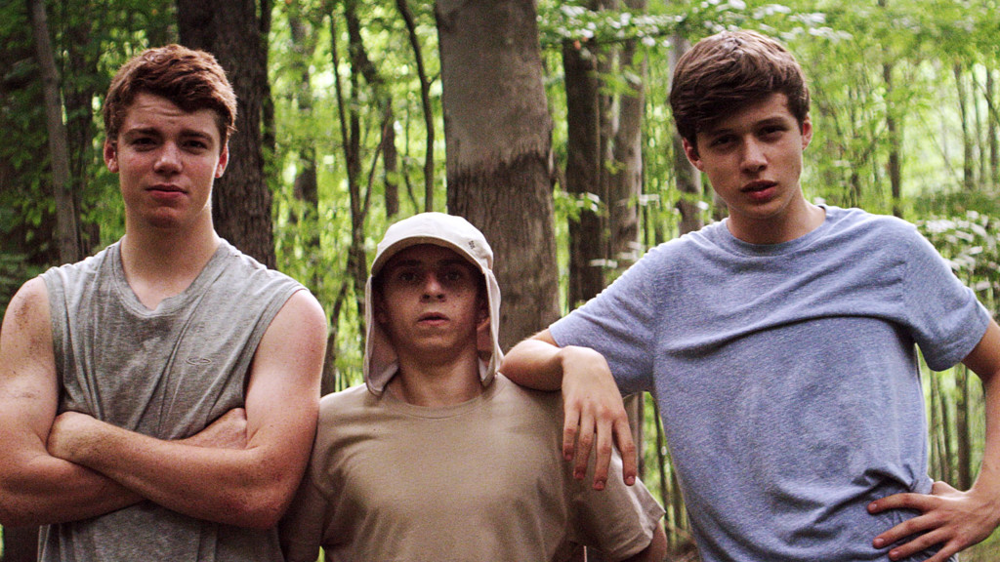
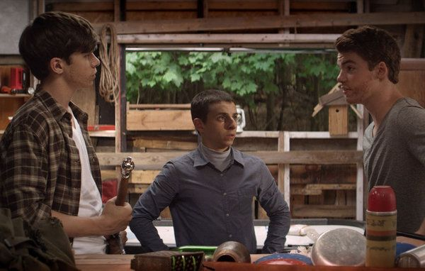
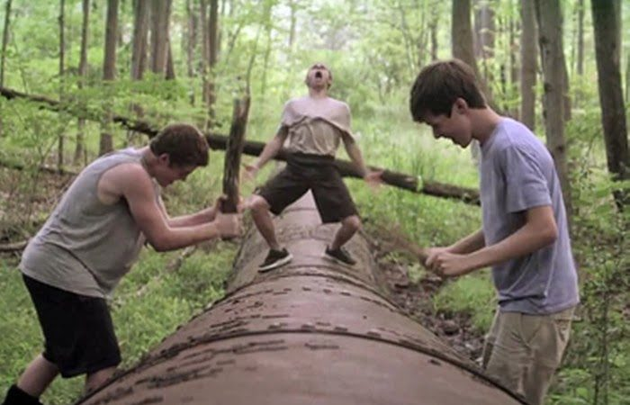
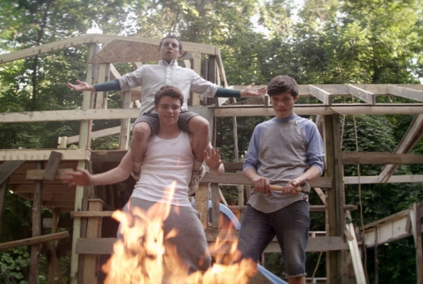

Los reyes del verano: Una pelicula mas, pero con corazón.
Una película que me maravillo desde que la vi sin lugar a duda es "Los reyes del verano"..... película que sigue a tres amigos, Joe (Nick Robinson), Patrick (Gabriel Basso),Biaggio (Moisés Arias) que hartados de vivir con sus molestos padres, deciden irse a vivir de forma independiente al bosque,donde no solo se enfrentaran a la naturaleza sino también a los nuevos sentimientos que trae empezar a convertirse en adulto.
{kind=link}
Algo ya visto
Creo que últimamente la forma en la que el cine se expresa de la adolescencia llega a ser un poco idealista. Por ejemplo las "ventajas de ser invisible", donde hay búsqueda de amistad, alcohol y la búsqueda de la identidad de una forma muy rebelde..."El arte de pasar de todo" donde al principio se explora la autoconmiseración y la falta de motivación, pero luego llega el amor,la traición y la gloria del personaje de George (Freddie Highmore ) que al final luego de tener 3 semanas para hacer todas las tareas y deberes de todo un año escolar, se puede graduar (cosa que pienso que tal vez es casi imposible).....Esa visión es muy sofisticada, muy filosófica no creo que un adolescente bebiera vino o tomara cerveza a esa temprana edad y que lo hagan con tanta normalidad como si fuera agua ...saben...esa visión no es muy real. Y creo que "Los Reyes del verano" llegan a recuperar la esencia de las películas de los ochenta al puro estilo de "Cuenta conmigo"(1986) o "El club de los Cinco"(1985)...que refleja perfectamente ese valor de amistad y esas ansias de independencia inherentes a la adolescencia.
{kind=link}
Dirección
Aunque que imagino muchos no conocerán a este Director Jordan Vogt-Roberts..les daré una pista " Kong: la Isla Calavera", o si el director de esta pelicula tambien es el mismo que dirigió "Kong: la Isla Calavera" esa película que aunque no tiene un gran desarrollo de personajes...tiene grandes escenas de acción y también muy bien filmada en la parte técnica... y "Los reyes del verano" a esta y buen desarrollo de personajes que no podría ser posible con el gran guion del novel Chris Galletta que aunque no hay nada nuevo en ella como por ejemplo la difícil relación entre padres e hijos,el primer amor, el primer corazón roto....que aunque y todo haya sido visto repasa todo con humor y un encanto que hace se convierta en una historia entrañable y sincera.
{kind=link}
Fotografía y Soundtrack
Una de mis tantas cosas favoritas es su fotografía...su estilo,sus planos,su escenario (Ubicada en el Estado de Ohio) hacen que esta película sea un deleite visual muy entretenida y genial....los planos de la naturaleza ,del los animales(Creo que las escenas que mas me gustan de una película es cuando hay planos de la localización donde se filma la película jajaja) y sobre todo de una escena en especifico donde una un tipo de música instrumental que sirve como un ritual de hombría para ellos es genial y totalmente hermosa. Creo que lo que hace aun mas especial la fotografía es el maravilloso soundtrack que se acompaña a esas escenas...y no hablo de las canciones totalmente compuestas para la película...hablo de las canciones que se utilizaron en la película...como por ejemplo "MGMT - The Youth", canción que expresa de forma perfecta la adolescencia y el cambio que esta esta teniendo o "Youth Lagoon - 17" que cierra perfectamente la película con los bellos planos de la naturaleza y a las casa en el bosque...que te llama a seguir imaginando y pensar en grande sin duda hermoso.
La terrible combinación de Comedia-Drama
Creo que un punto negativo de la película y creo que es en lo que mas falla es en la comedia que se muestra algo que llega a ser muy descarado (No tanto al estilo Kong: la Isla Calavera) pero se llega notar..comedia que llega a ser muy tonta como por ejemplo la explosión de un auto o El padre de Joy (Nick Offerman) que en uno de sus sueños imagina que lleva unas espadas y lo hace polvo con la mirada.....algo que aunque no afecta mucho el desarrollo de la trama si hace que arruine momentos dramáticos de la cinta....y como dije ninguna película es perfecta y todos tiene sus fallas.

¿La recomiendo?
Claro que la recomiendo es una historia,cómica,dramática y melancolía en algunos momentos que hacen que sea imperdible e impresionante y al ser una pelicula de corte independiente presentada en el Festival de Sundance en 2013 hace que haya sido poco ignorada por el publico...... pero que muestra la libertad y la independencia que todos nos hubiese gustado vivir en nuestra adolescencia (En mi caso que me gustaría vivir .La pueden encontrar completa en youtube aquí les dejo el link y nos vemos luego con mas contenido 
{kind=link}